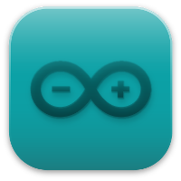
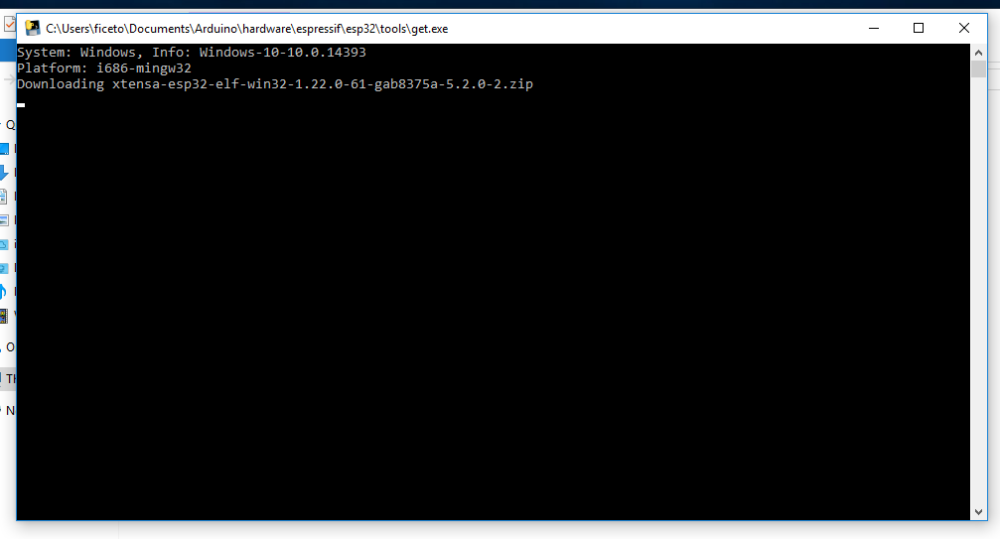

环境搭建
2022-12-02
这篇文章将会指引您安装Leaf-S3的Arduino支持。

使用Arduino IDE安装支持
这是直接从 Arduino IDE 安装 Arduino-ESP32 的方法。
从 Arduino IDE 版本 1.6.4 开始，Arduino 允许使用 Boards Manager（开发板管理器）安装第三方平台包。有适用于 Windows、macOS 和 Linux 的软件包。
Arduino IDE 下载地址：https://www.arduino.cc/en/software
Arduino IDE 2.0与Arduino IDE 1.8.x的UI有些许差异，本文基于1.8.13版本编写，但不影响使用2.0版本的用户参考。
要使用 Boards Managaer（开发板管理器）安装esp32平台包，请执行以下步骤：
安装当前上游 Arduino IDE 1.8 或更高版本。
启动 Arduino 并打开 File（文件）> Preferences（首选项）窗口，找到Additional Board Manager URLs（附加开发板管理器网址）。
- 稳定版链接：
https://raw.githubusercontent.com/espressif/arduino-esp32/gh-pages/package_esp32_index.json
- 开发版链接：
https://raw.githubusercontent.com/espressif/arduino-esp32/gh-pages/package_esp32_dev_index.json
- 在Additional Board Manager URLs后面输入上述发布链接之一。您可以添加多个 URL，一行一个。
从菜单打开 Tools（工具） > Board（开发板）> Board Manager（开发板管理器） 搜索并安装esp32平台。
重启arduino IDE之后可以看到在开发板选项中多了ESP32 Arduino选项。
选择 ESP32S3 Dev Module 这个型号，再参照下图所示的内容进行配置一遍即可，配置不当是无法使用的，请一定要参照下图所示的内容进行配置！
从GitHub下载或克隆arduino-esp32仓库，手动安装
仅限Windows系统。
2022/10/26 master分支已合并BPI-Leaf-S3板型，预计年底更新后可以直接从Board Manager中添加并使用此板形。
- 打开GitHub页面：https://github.com/espressif/arduino-esp32
- 点击
Code按钮,点击Download ZIP即可用最简单的方式将仓库下载到本地，建议初学者使用此方法。
- 也可通过GitHub Desktop或Git克隆master分支到本地。
- 解压zip文件到Arduino IDE安装路径的
/hardware/espressif/路径中，将解压出的文件夹重命名为esp32。
- 打开
/hardware/espressif/esp32/tools路径， 并双击运行get.exe。

get.exe完成后，您应该会在目录中看到以下文件。
- 重启arduino IDE之后可以看到在开发板选项中多了ESP32 Arduino选项。